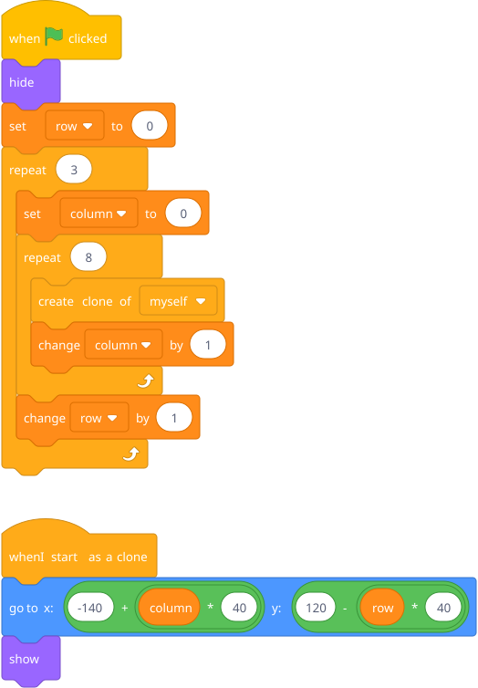
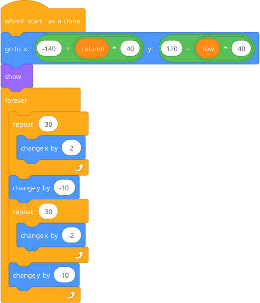
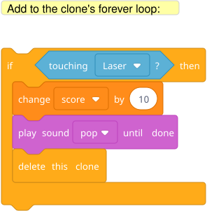
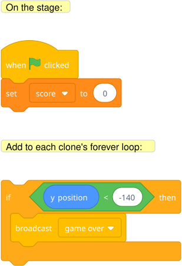
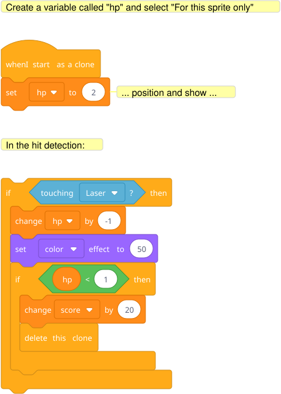

Rebuild the space shooter, but now enemies are clones. One enemy sprite, cloning itself into a grid. Each clone moves independently. Player shoots, laser touches a clone, that clone deletes itself.
This is a substantial project. Break it into pieces.

Blocks to point out: The math in go to places each clone in a grid. Column controls x (left-right), row controls y (up-down). The -140 and 120 are the starting position of the grid. The * 40 is the spacing between enemies. He doesn't need to get the math perfect on the first try — tweak the numbers until the grid looks right.
Add to the clone script:

Classic Space Invaders march: right, drop, left, drop, repeat.

When a laser touches this specific clone, only that clone deletes itself. The others keep going. This is the magic of clones — each one is its own independent actor.

If any enemy reaches the bottom, game over.
Key insight: Cloning lets you create many from one. You write the behavior once, and every copy follows it. This is the seed of object-oriented thinking.
Different enemy types — some take 2 hits, some shoot back. This requires clone-local variables.
Hint — blocks he'll need:
Scratch doesn't have true clone-local variables, but "for this sprite only" variables work per-clone:

The "For this sprite only" option when creating the variable is the key — it means each clone has its own copy of hp. Without it, all clones share one hp and shooting one enemy would affect them all.